--Plan--
Esta funcionalidad permite especificar la gestión de un plan en el sistema, elemento principal del proceso de planificación, a través del cual se hará la consolidación y desagregación de la información, así como la supervisión de la misma a los niveles organizativos de la empresa, teniendo en cuenta la unidad de medida original de los indicadores y la unidad de medida alternativa de la forma de presentación con que se planifiquen los mismos. Para acceder a esta funcionalidad se debe acceder a Inicio\Planificación material\Plan\Plan.
Una vez seleccionada la funcionalidad, aparecerá en pantalla la interfaz de la misma, donde el usuario autenticado podrá realizar las acciones que desee, en correspondencia con el acceso que tenga definido, ver figura 1.
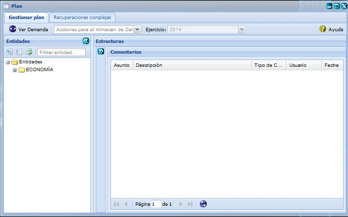
Figura 1. Interfaz de la funcionalidad Plan.
Luego de mostrada la interfaz anterior, para acceder a cada una de las funcionalidades que esta brinda, debe proceder a desglosar el árbol de entidades y seleccionar una entidad en específica, una vez seleccionada la misma el sistema desplegará automáticamente el panel central Planes con una consolidación de todos los planes de sus entidades hijas en caso de poseerlas como se muestra en la figura 2. Estos planes saldrán consolidados para el caso que seleccione una entidad padre.
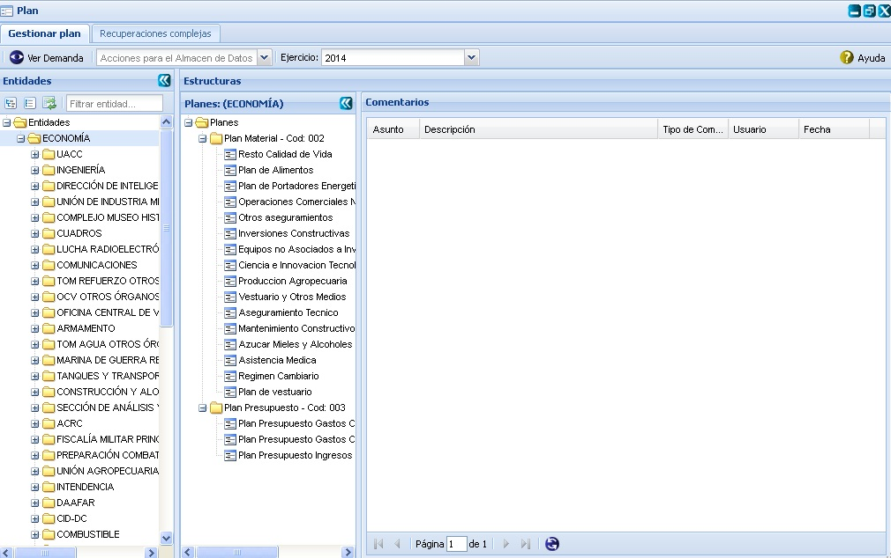
Figura 2. Interfaz Plan dividida en paneles.
Nota: el panel izquierdo Comentario solo le saldrá al dar clic encima de una agrupación, si se presiona clic encima de un plan de los contenidos dentro de una agrupación, automáticamente el sistema le mostrará el panel Detalles del plan con un grupo de funcionalidades que pueden ser ejecutadas sobre el mismo y los indicadores que posee el plan seleccionado en caso de poseer alguno. Es importante tener en cuenta que al seleccionar una entidad padre se activa automáticamente el panel central Planes con cada uno de los planes consolidados, luego de activado el mismo si selecciona un plan de los mostrados, el sistema activará el panel derecho Detalles del plan con cada uno de los indicadores consolidados de cada una de sus entidades hijas en ese plan. Ver figura 3.
Nota: Los usuarios con categoría rector son los únicos que tienen permisos para crear las agrupaciones y los planes contenidos dentro de la misma, así como de efectuar las funcionalidades de eliminación de estas y hacer funciones de visualización, cambio de ejercicio y aprobación de los indicadores adicionados al plan por los especialistas. Estos últimos son los encargados de realizar todas las funcionalidades de gestión sobre los indicadores de un plan, así como de adicionar y ver los comentarios que hayan sido adicionados tanto a los planes como a los indicadores. En fin los rectores son los encargados de hacer la aprobación final de los indicadores y los especialistas hacen una aprobación a nivel de especialistas.
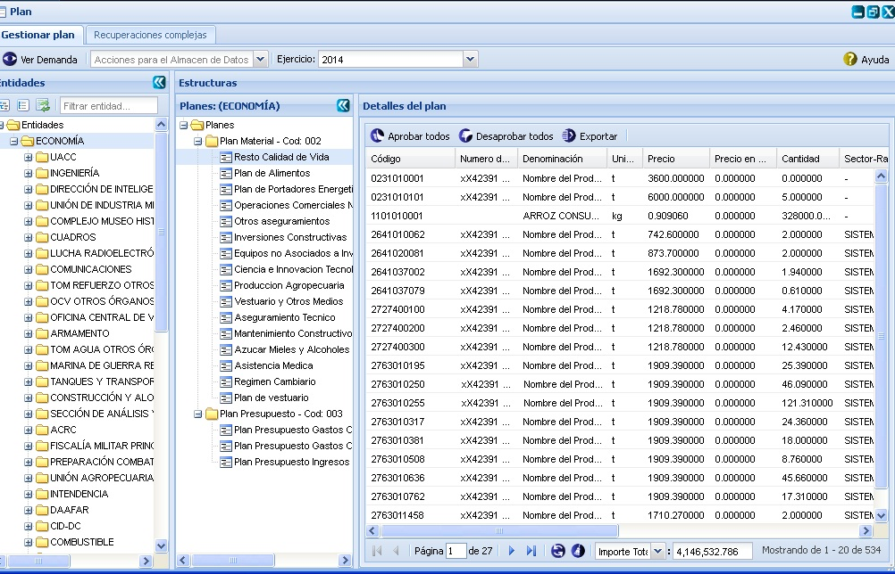
Figura 3. Interfaz Plan mostrando el panel izquierdo Detalles del plan.
Acciones que se pueden realizar sobre la carpeta Planes
Adicionar agrupación 
Para adicionar una nueva agrupación es necesario presionar clic derecho sobre la carpeta Planes. Una vez ejecutada dicha accion el sistema le mostrará un menú, ver figura 4, se selecciona la opción Adicionar agrupación que aparece en el mismo y seguidamente se mostrará la ventana Adicionar agrupación, ver figura 5.
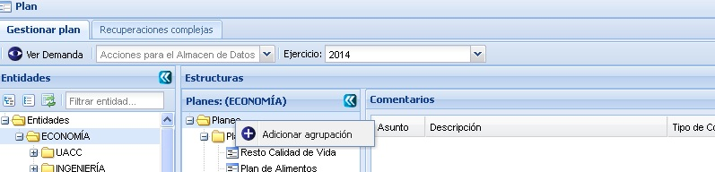
Figura 4. Menú adicionar agrupación.
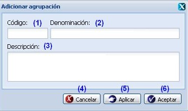
Figura 5. Interfaz Adicionar agrupación.
Las opciones de la figura anterior permiten:
- Introducir el código de la agrupación que desea insertar.
- Introducir la denominación de la agrupación que desea insertar.
- Introducir una breve descripción del grupo de nomenclador. Este dato no es obligatorio.
- Cancelar las acciones y salir de la interfaz sin guardar los datos.
- Guardar los datos y limpiar los campos de la interfaz, permitiendo adicionar otra agrupación.
- Adicionar los datos de la agrupación al árbol de planes y cerrar la interfaz.
Validación de los campos:
- Los campos Código y Denominación son obligatorios, en caso de dejar alguno de estos campos vacíos y presionar el botón Aceptar/Aplicar el sistema debe mostrar el mensaje “Por favor verifique nuevamente que hay campo(s) con valor(es) incorrecto(s).”, se acepta el mensaje, se subraya el campo en rojo y se debe mostrar el siguiente mensaje al pasar el mouse por encima del campo subrayado: “Este campo es obligatorio.”.
- El campo código solo acepta letras, números y el carácter especial “-” en caso contrario se subraya el campo en rojo y debe mostrar el mensaje: “Solo admite caracteres alfanuméricos y el carácter especial (-).” al pasar el mouse por encima del campo.
- No se permite adicionar una nueva agrupación con el mismo código. Si esto ocurre el sistema debe mostrar el siguiente mensaje de error: “Por favor, verifique, el código ya existe.”.
- El campo denominación acepta letras, números y los caracteres especiales guión alto “-” y guión bajo “_”, en caso de introducir otros caracteres se debe subrayar el campo en rojo y mostrar el mensaje: “Solo admite caracteres alfanuméricos y los caracteres especiales (- y _).”. Si se presiona el botón Aceptar o Aplicar se muestra el mensaje de información: “Por favor verifique nuevamente que hay campo(s) con valor(es) incorrecto(s).” se acepta el mensaje, subraya el campo en rojo y se muestra el mensaje: “Solo admite caracteres alfanuméricos, y los caracteres especiales guión alto (-) y guión bajo (_).” al pasar el mouse por encima del campo. No se permite escribir más de 225 caracteres en caso de que ocurra el sistema debe mostrar el siguiente mensaje: “El tamaño máximo requerido es 225 caracteres.”.
- El campo Descripción acepta letras, números y caracteres especiales sin límites, puede estar vacío.
Acciones que se pueden realizar sobre una agrupación
Sobre una agrupación se pueden ejecutar diferentes acciones, tales como: Adicionar plan a la agrupación, eliminar o modificar una determinada agrupación, adicionar y ver comentarios de la agrupación. Ver figura 6.
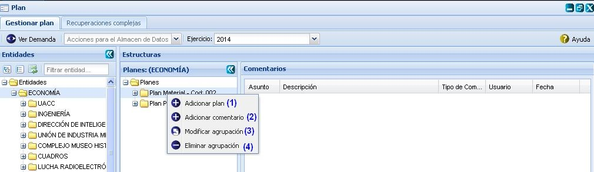
Figura 6. Menú de acciones que se pueden ejecutar sobre una agrupación.
Las diferentes opciones que brinda la figura anterior permiten:
- Adicionar plan. Ver Adicionar plan a una agrupación . Esta acción permite adicionar un plan a una agrupación en específica, para ejecutar la funcionalidad el sistema le mostrará la interfaz “Adicionar plan”, cuando se presione el botón Aceptar o Aplicar de dicha interfaz el sistema le mostrará un mensaje de información notificando que se adicionó el plan a la agrupación.
- Adicionar comentario. Ver Adicionar comentario a una agrupación. Esta acción permite adicionar un comentario a la agrupación seleccionada, para ejecutar la funcionalidad el sistema le mostrará la interfaz “Adicionar comentario”, cuando se presione el botón Aceptar o Aplicar de la interfaz el sistema le mostrará un mensaje de información notificando que se adicionó el comentario a la agrupación.
- Modificar agrupación. Esta acción permite modificar los datos de la agrupación previamente seleccionada en la estructura de carpetas que aparece en el panel central Planes. Una vez seleccionada la misma y presionada la opción Modificar que aparece en el menú que se muestra al dar clic derecho sobre la agrupación que desea modificar, el sistema le mostrará la interfaz Modificar agrupación con los datos cargados, posibilitando que se modifiquen los datos que se requieran. El procedimiento del llenado de los datos y selección de los botones de la interfaz Modificar agrupación es muy similar al descrito en la funcionalidad descrita en el Adicionar agrupación.
- Eliminar agrupación previamente seleccionada en la estructura de carpetas que aparece en el panel central Planes. Una vez seleccionada la misma y presionada la opción Eliminar, que aparece al dar clic derecho sobre la agrupación que desea eliminar, el sistema le mostrará automáticamente un mensaje de confirmación, que se puede Aceptar o Cancelar según sea el caso, de presionar la opción Aceptar el sistema le mostrará un mensaje de información sobre el éxito de la operación realizada, quedando eliminada la agrupación seleccionada, si cancela el mensaje de confirmación, el sistema permanece en la interfaz principal y no elimina la agrupación. Es importante tener en cuenta que si se elimina una agrupación todos los planes contenidos dentro de la misma también serán eliminados.
Adicionar plan a una agrupación
Para realizar esta acción deberá seleccionar la opción (1) Adicionar plan de la figura 6. Automáticamente el sistema le mostrará la interfaz Adicionar plan que aparece en la figura 7. Es importante recalcar que para ejecutar esta acción se debe haber adicionado al menos una agrupación de planes en el sistema y debe existir al menos un tipo de modelo aprobado y activado.
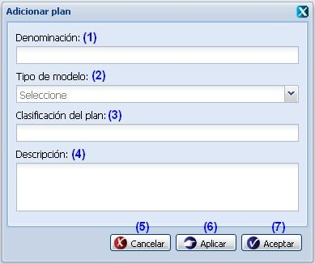
Figura 7. Interfaz de usuario Adicionar plan a una agrupación.
Las opciones de la figura anterior permiten:
- Introducir la denominación del comentario que desea insertar.
- Seleccionar el tipo de modelo que presentará el plan a insertar.
- Introducir la clasificación que presentará el plan a insertar. Una vez seleccionado dicho campo, el sistema le mostrará automáticamente la interfaz de la figura 8, luego de mostrada la misma se procede a desglosar la estructura de clasificaciones y seleccionar una, una vez seleccionada se procede a seleccionar la opción Aceptar de la interfaz, mostrando así la clasificación seleccionada en dicho campo, de presionar la opción Cancelar, el sistema cancelará las acciones y no adicionará la clasificación.
- Introducir una breve descripción del plan a insertar.
- Cancelar las acciones y salir de la interfaz sin guardar los datos.
- Guardar los datos y limpiar los campos de la interfaz, permitiendo adicionar otro plan.
- Adicionar los datos del plan y cerrar la interfaz.
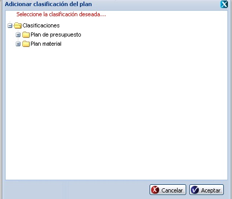
Figura 8. Interfaz de usuario Adicionar clasificación del plan.
Validación de los campos:
- Todos los campos de la interfaz Adicionar plan son obligatorios, en caso de dejar uno de estos campos vacíos, el sistema los marca en rojo y muestra el siguiente mensaje en el mismo campo: “Este campo es obligatorio.”, al pasar el cursor por encima del campo. Si presiona la opción Aceptar/Aplicar de la interfaz sin haber adicionado valores en alguno de estos campos, el sistema le mostrará el mensaje de información: “Por favor verifique nuevamente que hay campo(s) con valor(es) incorrecto(s).”.
- El campo denominación acepta letras, números y los caracteres especiales guion bajo (_) y guion alto (-), y no se permite escribir más de 225 caracteres en el mismo. En caso de que ocurra el sistema debe mostrar el siguiente mensaje: “El tamaño máximo requerido es 225 caracteres.”, para el caso que introduzca más de 255 caracteres y el mensaje de error: “Solo admite caracteres alfanuméricos y los caracteres especiales (- y _).”, para el caso que introduzca otros valores que no sean los admitidos en el campo.
- El campo descripción acepta letras, números y caracteres especiales sin límites.
Adicionar comentario a una agrupación
Para realizar esta acción deberá seleccionar la opción (2) Adicionar comentario de la figura 6. Automáticamente el sistema le mostrará la interfaz Adicionar plan que aparece en la figura 9.
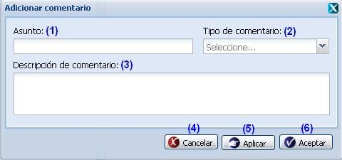
Figura 9. Interfaz de usuario Adicionar comentario a una agrupación.
Las opciones de la figura anterior permiten:
- Introducir el asunto del comentario que desea insertar.
- Seleccionar el tipo de comentario a insertar.
- Introducir una breve descripción del comentario.
- Cancelar las acciones y salir de la interfaz sin guardar los datos.
- Guardar los datos y limpiar los campos de la interfaz, permitiendo adicionar otro comentario.
- Adicionar los datos del comentario y cerrar la interfaz.
Validación de los campos:
- Los campos Asunto, Tipo de comentario y Descripción son obligatorios, en caso de dejar alguno de estos campos vacíos el sistema debe mostrar el campo en rojo y el siguiente mensaje: “Este campo es obligatorio.” al pasar el mouse por encima del campo. En caso que presiona le opción Aceptar de la interfaz sin haber adicionado ningún valor en alguno de estos campos, el sistema le mostrará el mensaje de información: “Por favor verifique nuevamente que hay campo(s) con valor(es) incorrecto(s).”.
- En el campo Asunto acepta letras, números y los caracteres especiales guión bajo (_) y guión alto (-), no se permite escribir más de 225 caracteres en caso contrario al presionar el botón Aceptar o Aplicar el sistema debe mostrar el mensaje: “Por favor verifique nuevamente que hay campo(s) con valor(es) incorrecto(s).”, se acepta el mensaje y el sistema debe mostrar el mensaje: “Solo admite caracteres alfanuméricos y los caracteres especiales (- y _).” o “El tamaño máximo requerido es 225 caracteres.” al pasar el mouse por encima del campo respectivamente.
- El campo descripción acepta letras, números y caracteres especiales sin límites.
Acciones que se pueden realizar sobre un plan
Después de seleccionar clic derecho sobre un plan aparecerá un menú de las opciones que se pueden realizar sobre un plan, en dependencia del usuario autenticado, ver figura 11 y 20.
Órgano rector:
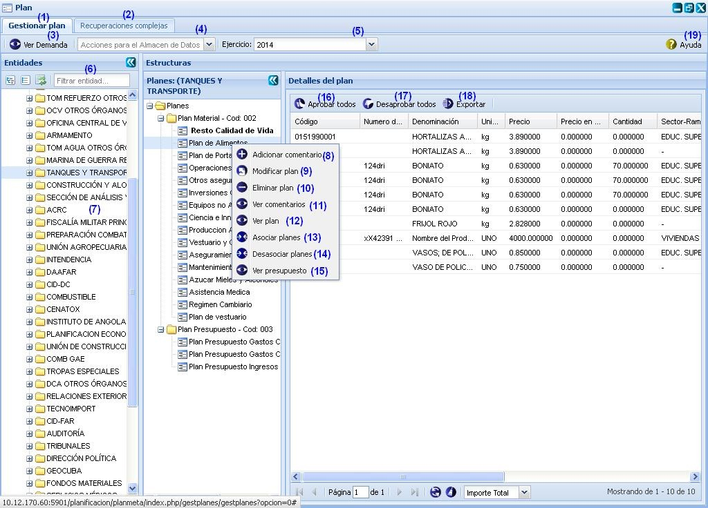
Figura 10. Interfaz Plan\Órgano Rector.
Las diferentes opciones que conforman la figura anterior permiten:
- Gestionar plan.
- Realizar recuperaciones complejas, ver Realizar recuperaciones complejas.
- Ver demanda por entidades de centro de balance, ver Ver demanda.
- Seleccionar acciones para el almacén de dato. Se pueden realizar acciones de Cierre y Actualización en ambos casos cuando se seleccione uno de ellos el sistema mostrará un mensaje de información notificando que se realizó la operación satisfactoriamente.
- Seleccionar el Ejercicio, si desea hacer un plan con un ejercicio diferente al ejercicio actual, se procede a desglosar la opción Ejercicio, una vez seleccionado el mismo automáticamente se actualizan los datos de la interfaz, con cada uno de los planes del ejercicio seleccionado, teniendo en cuenta la entidad para la cual desea insertar los planes.
- Filtrar por entidad, se introduce la denominación de la entidad y se presiona la tecla Enter, el sistema muestra las entidades que correspondan con los criterios de búsqueda especificados.
- Listar las entidades.
- Adicionar comentario a un plan. Esta acción permite adicionar un comentario a un plan, cuando se presione el botón Aceptar de la interfaz el sistema mostrará un mensaje de información notificando que se adicionó el comentario al plan satisfactoriamente. El procedimiento del llenado de los datos y selección de los botones de la interfaz Adicionar comentario es igual al descrito en la funcionalidad Adicionar comentario a una agrupación descrito en el Adicionar comentario a una agrupación.
- Modificar un plan previamente seleccionado. Una vez seleccionado el plan y presionada la opción Modificar plan que aparece al presionar clic derecho (secundario) sobre el plan a modificar, el sistema le mostrará la interfaz con los datos cargados, posibilitando que se modifiquen los datos que se requieran. La validación de cada uno de los campos de la interfaz será muy similar al descrito en el Adicionar plan.
- Eliminar un plan previamente seleccionado. Esta acción permite eliminar el plan deseado, una vez seleccionado se procede a seleccionar la opción Eliminar plan que aparece al presionar clic derecho (secundario) sobre el plan a eliminar, automáticamente se mostrará un mensaje de confirmación, que se puede Aceptar o Cancelar según sea el caso, de presionar la opción Aceptar el sistema le mostrará un mensaje de información sobre el éxito de la operación realizada, quedando eliminado el plan seleccionado, si cancela el mensaje de confirmación, el sistema permanece en la interfaz principal y no elimina plan.
- Ver comentario de un plan. El sistema activa el panel Comentario posibilitando ver los comentarios que tiene ese plan.
- Ver plan. El sistema activa el panel Detalles del plan posibilitando ver los detalles del plan.
- Asociar planes. Esta acción permite asociar planes a entidades. Para acceder a la misma se procede a seleccionar un plan previamente insertado en la estructura de carpetas que aparece en el panel central Planes. Una vez seleccionado el mismo y presionada la opción Asociar planes, que aparece al dar clic derecho sobre un plan en específico, el sistema le mostrará automáticamente la interfaz Asociar planes con cada una de las entidades que presentan comportamiento como órgano demandante que no se encuentran asociadas al plan, se procede a seleccionar la(s) entidad(es) que se quiere(n) asociar al plan seleccionado y se presiona la opción Aceptar de la interfaz, automáticamente el sistema le mostrará un mensaje de información sobre el éxito de la operación realizada, se acepta el mensaje de información y queda(n) asociada(s) la(s) especialidad(es) seleccionada(s) al plan. Si presiona la opción Aplicar de la interfaz, se asocia la entidad seleccionada al plan y se mantiene la ventana Asociar planes permitiendo seleccionar más entidades. De presionar la opción Cancelar, se cierra la ventana Asociar planes y se cancela la acción. Ver figura 11. De haber sido asociadas todas las entidades o no existir entidades con comportamiento como órgano demandante a mostrar, el sistema le mostrará un mensaje de información notificando que no existe ninguna entidad con comportamiento órgano demandante a mostrar, pues todas se encuentran asociadas al plan.
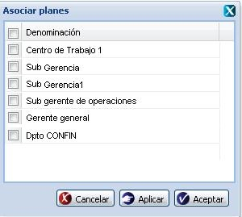
Figura 11. Interfaz de usuario Asociar planes.
- Desasociar planes. Esta acción permite desasociar planes a entidades. Para acceder a la misma se procede a seleccionar un plan previamente insertado en la estructura de carpetas que aparece en el panel central Planes. Una vez seleccionado el mismo y presionada la opción Desasociar planes, que aparece al dar clic derecho sobre un plan en específico, el sistema le mostrará automáticamente la interfaz Desasociar planes con cada una de las entidades que presentan comportamiento como órgano demandante que se encuentran asociadas al plan, se procede a seleccionar la(s) entidad(es) que se quiere(n) desasociar al plan seleccionado y se presiona la opción Aceptar de la interfaz, automáticamente el sistema le mostrará un mensaje de información sobre el éxito de la operación realizada, se acepta el mensaje de información y queda(n) desasociada(s) la(s) especialidad(es) seleccionada(s) al plan. Si presiona la opción Aplicar de la interfaz, se desasocia la entidad seleccionada al plan y se mantiene la ventana Desasociar planes permitiendo seleccionar más entidades. De presionar la opción Cancelar, se cierra la ventana Desasociar entidades y se cancela la acción. Ver figura 12. De haber sido desasociadas todas las entidades con comportamiento como órgano demandante a mostrar en la interfaz, el sistema le mostrará un mensaje de información notificando que no existe ninguna entidad con comportamiento órgano demandante asociada al plan.
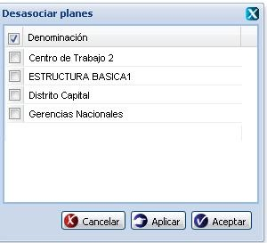
Figura 12. Interfaz de usuario Desasociar planes.
- Ver presupuesto del plan seleccionado. El sistema activa el panel Asociación a presupuesto posibilitando ver las asociaciones a presupuestos que tiene ese plan. Ver Acápite Ver presupuesto.
- Aprobar todos los indicadores. Se puede realizar esta acción de manera rápida con la combinación de las teclas (Ctrl + Alt + Q). El sistema mostrará un mensaje de confirmación que puede aceptar o cancelar según desee, si presiona el botón Aceptar el sistema aprueba todos los indicadores y muestra un mensaje de información notificando que se realizó la operación con éxito. Si presiona el botón Cancelar el sistema cierra el mensaje de confirmación, no realiza ninguna acción y se mantiene en la interfaz principal.
- Desaprobar todos los indicadores. Se puede realizar esta acción de manera rápida con la combinación de las teclas (Ctrl + Alt + W). El sistema mostrará un mensaje de confirmación que puede aceptar o cancelar según desee, si presiona el botón Aceptar el sistema desaprueba todos los indicadores y muestra un mensaje de información notificando que se realizó la operación con éxito. Si presiona el botón Cancelar el sistema cierra el mensaje de confirmación, no realiza ninguna acción y se mantiene en la interfaz principal.
- Exportar indicadores del plan, ver Acápite Exportar indicadores del plan.
- Mostrar ayuda de la funcionalidad. Se puede realizar esta operación seleccionando la combinación de teclas (Alt + H).
Acciones que se puede efectuar sobre un indicador
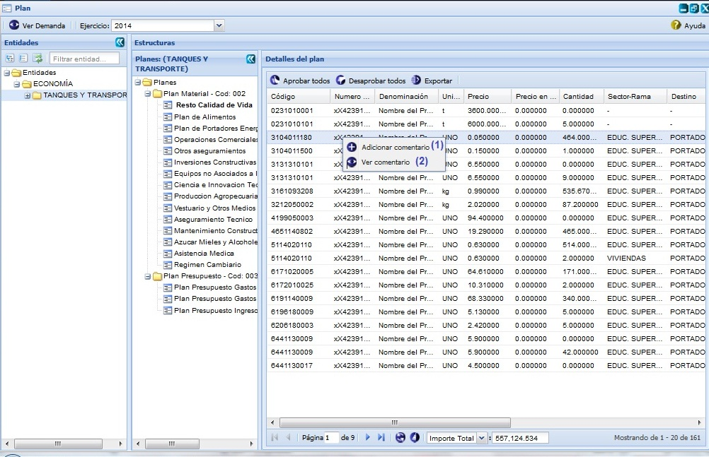
Figura 13. Interfaz Plan\Órgano Demandante y Órgano Rector.
Las diferentes opciones que conforman la figura anterior permiten:
- Adicionar comentario a un indicador que este asociado al plan seleccionado en el panel Planes. Esta acción permite adicionar un comentario al indicador, cuando se presione el botón Aceptar o Aplicar de la interfaz el sistema le mostrará un mensaje de información notificando que se adicionó el comentario al plan. El procedimiento del llenado de los datos y selección de los botones de la interfaz “Adicionar comentario” es muy similar al descrito en la funcionalidad Adicionar comentario a una agrupación descrito en el Acápite Adicionar comentario a una agrupación.
- Ver comentario del indicador que este asociado al plan seleccionado en el panel Planes. Una vez seleccionada dicha opción, el sistema activará el panel Comentario posibilitando ver los comentarios que tiene el indicador seleccionado en ese plan.
Ver demanda
Para ver la demanda se debe presionar la opción (3) de la figura 10, automaticamente el sistema le mostrará la interfaz que se muestra a continuación permitiendo ver las demandas de entidades por un centro de balance seleccionado, tambien puede exportar la demanda presionando el botón Exportar, para más detalle de cómo se exporta ver Exportar indicadores del plan.
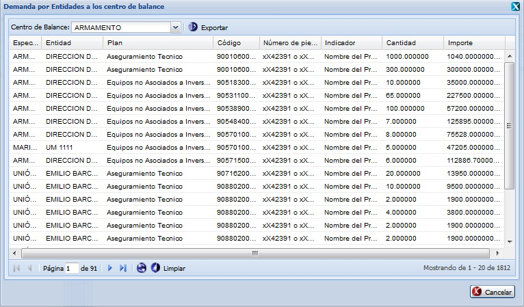
Figura 14. Interfaz Demanda por entidades.
Exportar indicadores del plan
Esta funcionalidad permite exportar los indicadores de un determinado plan, para exportar los mismos se procederá de igual forma como se explica en el listado de opciones de la figura 15.
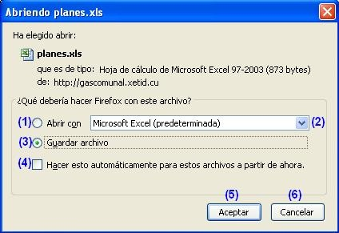
Figura 15. Interfaz Abriendo planes.xls.
Las diferentes opciones que conforman la figura anterior permiten:
- Abrir un documento con los indicadores del plan seleccionado.
- Seleccionar formato en que desea guardar o visualizar el documento.
- Guardar archivo en la carpeta Descargas.
- Ejecutar las opciones 1 o 3 sin mostrar la ventana cada vez que se invoque a la funcionalidad.
- Ejecutar la acción según la opción seleccionada.
- Cancelar las acciones y salir de la interfaz sin realizar ninguna operación.
Ver presupuesto
Para ejecutar esta funcionalidad se debe seleccionar clic derecho (secundario) sobre un determinado plan, una vez ejecutada dicha acción el sistema le mostrará un menú con las acciones que se pueden efectuar sobre el mismo, luego de mostrado el menú se procede a seleccionar la opción Ver presupuesto. Automáticamente el sistema le mostrará el panel Asociación a presupuesto donde se muestran los indicadores del plan, notificando de cada uno de ellos si se encuentran asociados o no a un Objeto de gasto o Recurso financiero. Ver figura 16.
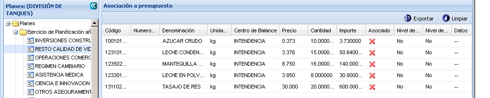
Figura 16. Interfaz Asociación a presupuesto.
Una vez mostrada esta interfaz con los indicadores de un plan determinado, puede realizar dos operaciones fundamentales: Asociar a Objeto de gasto o Asociar a recurso Financiero. A estas dos opciones podrá acceder mediante clic secundario (derecho) encima de un indicador. Para ello el sistema le mostrará un menú de opciones, ver figura 17.
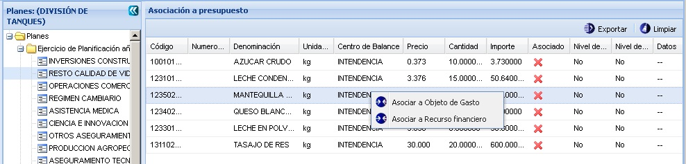
Figura 17. Interfaz Asociar a Objeto de Gasto o Recurso Financiero.
Asociar a Objeto de Gasto
Para ejecutar esta funcionalidad, se procede a seleccionar la opción Asociar a Objeto de Gasto del menú de la figura 17. Automáticamente el sistema le mostrará la ventana de la figura 18, luego de mostrada la misma, se procede a seleccionar un Nivel de actividad Económica y un Objeto de Gasto, seguidamente se selecciona la opción Asociar y queda asociado el indicador al objeto de gasto seleccionado, actualizando así la columna Asociado de la interfaz 17. Si se selecciona la opción Cancelar de la figura 18 no se ejecuta la asociación y regresa a la interfaz 17.
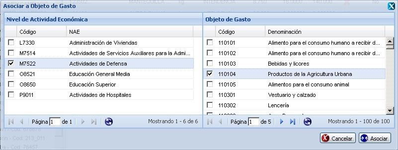
Figura 18. Interfaz Asociar a objeto de Gasto.
Asociar a Recurso Financiero
Para ejecutar esta funcionalidad, se procede a seleccionar la opción Asociar a Recurso Financiero del menú de la figura 17. Automáticamente el sistema le mostrará la ventana de la figura 19, luego de mostrada la misma, se procede a seleccionar un Nivel de actividad Económica y un Recurso Financiero, seguidamente se selecciona la opción Asociar y queda asociado el indicador al recurso financiero seleccionado, actualizando así la columna Asociado de la interfaz 17. Si se selecciona la opción Cancelar de la figura 19 no se ejecuta la asociación y regresa a la interfaz 17.
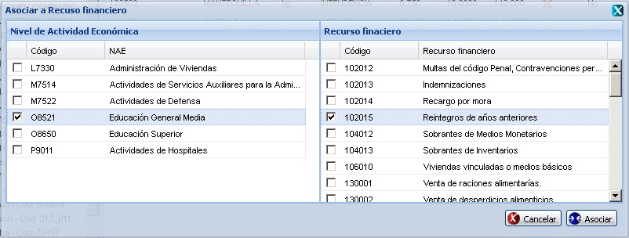
Figura 19. Interfaz Asociar a Recurso financiero.
Órgano demandante:
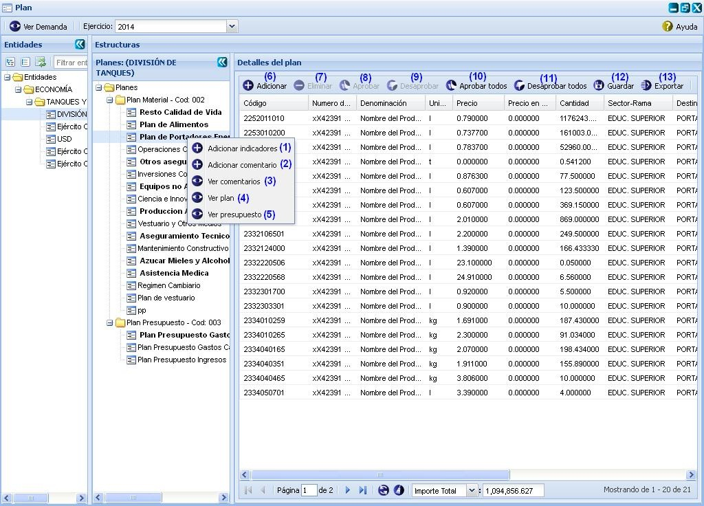
Figura 20. Interfaz plan/órgano demandante.
Las diferentes opciones que conforman la figura anterior permiten:
- Adicionar indicador al plan seleccionado, ver Adicionar indicador. Para ejecutar esta funcionalidad el sistema le mostrará la interfaz “Adicionar indicadores”, cuando se presione la opción Aceptar o Cancelar de la interfaz, el sistema le mostrará un mensaje de información notificando que se adicionó el indicador satisfactoriamente.
- Adicionar comentario al plan seleccionado. Esta acción permite adicionar un comentario al plan, cuando se presione el botón Aceptar o Aplicar de la interfaz el sistema le mostrará un mensaje de información notificando que se adicionó el comentario satisfactoriamente. El procedimiento del llenado de los datos y selección de los botones de la interfaz “Adicionar comentario” es muy similar al descrito en la funcionalidad Adicionar comentario a una agrupación descrito en el Adicionar comentario a una agrupación.
- Ver comentario del plan seleccionado. Una vez seleccionada dicha opción, el sistema activará el panel Comentario posibilitando ver los comentarios que tiene ese plan.
- Ver plan. El sistema activa el panel Detalles del plan posibilitando ver los detalles del plan.
- Ver presupuesto del plan seleccionado. El sistema activa el panel Asociación a presupuesto posibilitando ver las asociaciones a presupuestos que tiene ese plan. Ver Ver presupuesto.
- Adicionar indicador al plan. Esta funcionalidad permite adicionarle uno o varios indicadores al plan, ver Acápite Adicionar indicador. Para ejecutar esta funcionalidad el sistema le mostrará la interfaz “Adicionar indicadores”, cuando se presione la opción Aceptar o Cancelar de la interfaz, el sistema le mostrará un mensaje de información notificando que se adicionó el indicador satisfactoriamente. Se puede acceder a esta funcionalidad con las teclas (Alt + I).
- Eliminar un indicador previamente seleccionado en el listado. Esta acción permite eliminar el(los) indicador(es) deseado(s). Una vez seleccionado(s) se procede a seleccionar la opción Eliminar de la interfaz, automáticamente se mostrará un mensaje de confirmación, que se puede Aceptar o Cancelar según sea el caso, de presionar la opción Aceptar el sistema le mostrará un mensaje de información sobre el éxito de la operación realizada, quedando eliminado(s) el(los) indicador(es) seleccionado(s), si cancela el mensaje de confirmación, el sistema permanece en la interfaz principal y no elimina el(los) indicador(es). Se puede realizar esta operación seleccionando el indicador en el listado y oprimiendo la tecla (Delete).
- Aprobar indicador. Esta opción permite aprobar uno o varios indicadores. Para efectuar esta acción se debe(n) seleccionar el(los) indicador(es) que se desea(n) aprobar y seleccionar la opción Aprobar de la interfaz, ver figura 20. Una vez seleccionada la misma, el sistema le mostrará un mensaje de confirmación, que se puede Aceptar o Cancelar según sea el caso, se presiona la opción Aceptar del mensaje y el sistema le mostrará un mensaje de información sobre el éxito de la operación realizada, se acepta el mensaje de información y se aprueban el(los) indicador(es) seleccionado(s). Si se opta por la opción Cancelar, el sistema cancela la acción y no permite aprobar el(los) indicador(es) seleccionado(s). Se puede realizar esta operación seleccionando la combinación de teclas (Alt + Q). Es importante tener en cuenta que para ejecutar esta funcionalidad se debe haber asignado un valor en el campo de la columna Cantidad de él(los) indicador(es) que se desea(n) aprobar, de lo contrario no se activará dicha funcionalidad.
- Desaprobar indicador. Esta opción permite desaprobar uno o varios indicadores. Para efectuar esta acción se debe(n) seleccionar el(los) indicador(es) que se desea(n) desaprobar y seleccionar la opción Desaprobar de la interfaz, ver figura 20. Una vez seleccionada la misma, el sistema le mostrará un mensaje de confirmación, que se puede Aceptar o Cancelar según sea el caso, de presionar la opción Aceptar del mensaje, el sistema le mostrará un mensaje de información sobre el éxito de la operación realizada, se acepta el mensaje de información y se desaprueban el(los) indicador(es) seleccionado(s). Si se opta por la opción Cancelar, el sistema cancela la acción y no permite desaprobar el(los) indicador(es) seleccionado(s). Se puede realizar esta operación seleccionando la combinación de teclas (Alt + W).
- Aprobar todos. Esta opción permite aprobar todos los indicadores. Para efectuar esta acción se debe seleccionar la opción Aprobar todos de la figura 20. Una vez seleccionada la misma, el sistema le mostrará un mensaje de confirmación, se acepta el mensaje y le mostrará un mensaje de información sobre el éxito de la operación realizada, se acepta el mensaje de información y se aprueban todos los indicadores que presenten modificado el campo de la columna Cantidad. Si se opta por la opción Cancelar, el sistema cancela la acción y no permite aprobar los indicadores. Se puede realizar esta operación seleccionando la combinación de teclas (Ctrl + Alt + Q). Es importante tener en cuenta que solo se aprobarán aquellos indicadores que presenten el campo Cantidad con un valor mayor que cero, de lo contrario no se aprobarán los mismos.
- Desaprobar todos. Esta opción permite desaprobar todos los indicadores. Para efectuar esta acción se debe seleccionar la opción Desaprobar todos de la figura 20. Una vez seleccionada la misma, el sistema le mostrará un mensaje de confirmación, se acepta el mensaje y le mostrará un mensaje de información sobre el éxito de la operación realizada, se acepta el mensaje de información y se desaprueban todos los indicadores. Si se opta por la opción Cancelar, el sistema cancela la acción y no permite desaprobar los indicadores. Se puede realizar esta operación seleccionando la combinación de teclas (Ctrl + Alt + W).
- Guardar. Esta opción permite guardar cada uno de los valores asignados en el campo Cantidad a los indicadores, para de esta forma poder efectuar las funciones de Aprobación sobre los mismos. Se puede acceder a esta funcionalidad con las teclas (Alt + G).
- Exportar. Ver Exportar indicadores del plan. Se puede acceder a esta funcionalidad presionando las teclas (Alt + E).
Adicionar indicador
Para ejecutar esta acción se procede a seleccionar la opción (6) de la figura 20. Al acceder a esta funcionalidad se muestra la siguiente interfaz, ver figura 21.
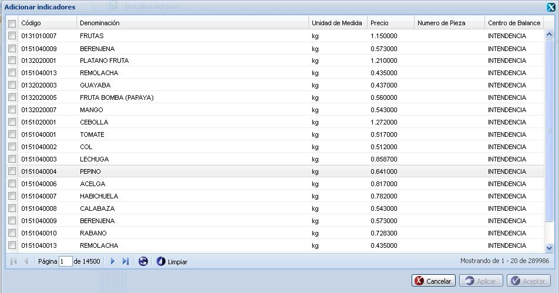
Figura 21. Interfaz Adicionar indicadores al plan.
Una vez mostrara dicha interfaz seleccione el(los) indicador(es) que desee adicionar al plan presionando el campo de selección que se encuentra del lado izquierdo de cada indicador. Aclarar que si desea adicionar todos los indicadores puede marcar el campo que se encuentra del lado izquierdo del campo Código.
La interfaz cuenta además con una búsqueda por filtrado de columnas para hacerle más fácil la selección de los indicadores, funcionalidad que es igual a la funcionalidad que se describirá en el epígrafe Buscar indicadores. Además de contar con la funcionalidad Limpiar, la cual se encarga de limpiar los filtros realizados en la interfaz a partir de la búsqueda realizada.
Una vez que seleccionado(s) el(los) indicador(es) deseado(s) presione uno de los siguientes botones:
- Si presiona el botón Aceptar: Se cierra la ventana, se muestra un mensaje de información sobre el éxito de la operación realizada, se acepta el mensaje y queda actualizado el listado en la interfaz Detalles de plan. Estos indicadores serán insertados automáticamente en el ejercicio actual.
- Si desea insertar los indicadores al plan en un ejercicio diferente al ejercicio actual, se procede a desglosar el campo Ejercicio que aparece en la parte superior de la interfaz principal, el sistema le mostrará automáticamente un listado de cada uno de los ejercicios configurados con anterioridad, se selecciona un ejercicio de los listados y se recarga la interfaz principal, de forma tal que pueda efectuar la planificación sobre el ejercicio seleccionado.
- Si presiona el botón Aplicar: Se muestra un mensaje de información sobre el éxito de la operación realizada, se acepta el mensaje y se permanece en la misma interfaz brindando la posibilidad de poder adicionar otros indicadores.
- Si presiona el botón Cancelar: Se cierra la ventana para adicionar indicadores sin tener en cuenta la posibilidad de haber seleccionado indicadores o no.
Buscar indicador planificado
Esta funcionalidad permite efectuar una búsqueda mediante filtrado en las columnas. Para efectuar la misma debe estar en el panel Detalles del plan, ver figura 20. Una vez que accedió a esta se presiona clic en el botón “ ” que aparece en la parte derecha de cada columna. Luego de presionado el mismo, se procede a desplegar la columna y se ofrece la posibilidad de realizar búsqueda mediante filtrado. Se introduce o selecciona el criterio de filtrado según la información que brinde la columna seleccionada. Inmediatamente se presiona la tecla Enter y el sistema le mostrará en la interfaz los indicadores según el criterio de filtrado seleccionado. En caso de que no existan indicadores a mostrar para el criterio de filtrado seleccionado el sistema lo notificará mostrando el mensaje de información: “No existen datos que se correspondan con el criterio de búsqueda especificados.”.
” que aparece en la parte derecha de cada columna. Luego de presionado el mismo, se procede a desplegar la columna y se ofrece la posibilidad de realizar búsqueda mediante filtrado. Se introduce o selecciona el criterio de filtrado según la información que brinde la columna seleccionada. Inmediatamente se presiona la tecla Enter y el sistema le mostrará en la interfaz los indicadores según el criterio de filtrado seleccionado. En caso de que no existan indicadores a mostrar para el criterio de filtrado seleccionado el sistema lo notificará mostrando el mensaje de información: “No existen datos que se correspondan con el criterio de búsqueda especificados.”.
Realizar recuperaciones complejas
Para acceder a esta funcionalidad se debe acceder a Inicio\Planificación material\Plan\Plan. Una vez seleccionada la funcionalidad, aparecerá en pantalla la interfaz Plan, donde el usuario autenticado selecciona la pestaña Recuperaciones complejas y podrá realizar las acciones que desee, en correspondencia con el acceso que tenga definido, ver figura 22.
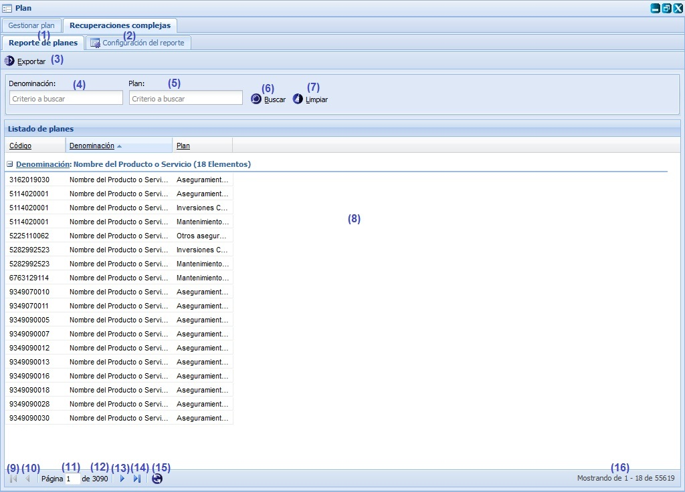
Figura 22. Interfaz Recuperaciones complejas \Reporte de planes.
Las diferentes opciones que conforman la figura anterior permiten:
- Seleccionar la pestaña Reporte de planes.
- Seleccionar la pestaña Configuración de reporte, ver Configuración de reporte.
- Exportar reporte, esta opción permite exportar la lista de planes. Se muestra la interfaz Exportar reporte ver Figura 23. Se introduce la denominación del reporte a exportar. Se oprime el botón Aceptar y el sistema valida los datos introducidos, se cierra la interfaz Exportar reporte y se muestra un documento en formato rtf con los resultados de la búsqueda realizada. En el caso que desee cancelar las acciones realizadas se oprime el botón Cancelar y se cierra la interfaz Exportar reporte y regresa a la interfaz Recuperaciones complejas pestaña Reporte de planes.
- Introducir la denominación por la que se va a efectuar una búsqueda.
- Introducir el plan por el que se va a efectuar una búsqueda.
- Buscar planes a partir de las opciones denominación y plan, introducidas en las opciones (4) y (5) respectivamente. En el caso de que no existan planes que cumplan con los criterios introducidos, el sistema mostrará el mensaje de información: “No existen datos que se correspondan con los criterios de búsqueda especificados.”, notificando que no existen datos que correspondan con los criterios de la búsqueda especificados. Se puede realizar esta operación seleccionando la combinación de teclas (Alt + B).
- Limpiar filtro(s). Esta acción limpiará todos los criterios de búsqueda, deshabilitando los filtros realizados. Se puede realizar esta operación seleccionando la combinación de teclas (Alt + L).
- Mostrar la lista de planes existentes en el sistema.
- Ir a la primera página, muestra los primeros planes.
- Ir a la página anterior.
- Muestra el número de la página donde se encuentra, se puede introducir el número.
- Muestra el número máximo de páginas.
- Ir a la siguiente página.
- Ir a la última página.
- Actualizar el listado de planes.
- Mostrar la cantidad de resultados encontrados.
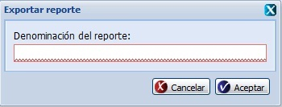
Figura 23. Interfaz Exportar reporte.
Configuración de reporte
Se selecciona la pestaña Configuración de reporte, en la sección izquierda se muestran los campos que el usuario desee que se muestren al realizar la búsqueda, en la sección derecha de la interfaz se muestran las diferentes opciones que tiene el usuario para configurar una búsqueda, ver figura 24.
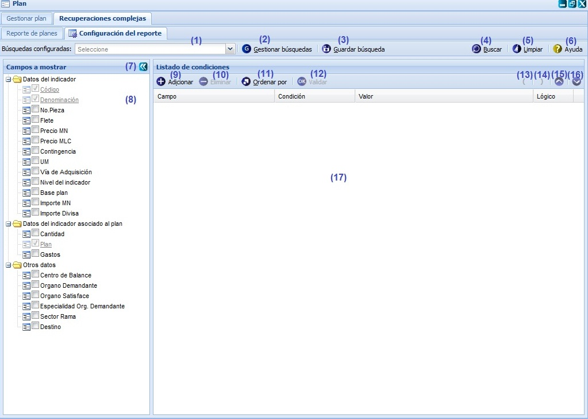
Figura 24. Interfaz Recuperaciones complejas \Configuración de reporte.
Las diferentes opciones que conforman la figura anterior permiten:
- Seleccionar del campo Búsquedas configuradas, dentro de todas las búsquedas que han sido configuradas con anterioridad, la que desee ejecutar.
- Gestionar búsquedas a partir de los datos que se insertan, ver Gestionar búsquedas. Se puede acceder a esta interfaz de manera rápida seleccionando la combinación de las teclas (Ctrl+Alt + G).
- Guardar búsqueda, ver Guardar búsqueda.
- Buscar planes. Al seleccionar esta opción se muestra por defecto la pestaña Reporte de planes, donde a partir de los campos denominación y plan respectivamente realiza la búsqueda. En el caso de que no existan planes que cumplan con los criterios introducidos, el sistema mostrará un mensaje de información notificando que no existen datos que correspondan con los criterios de la búsqueda especificados. Se puede realizar esta operación seleccionando la combinación de teclas (Alt + B).
- Limpiar. Esta acción limpiará todos los datos, permitiendo introducir nuevos campos a la lista de condiciones. Se puede realizar esta operación seleccionando la combinación de teclas (Alt + L).
- Mostrar ayuda de la funcionalidad. Se puede realizar esta operación seleccionando la combinación de teclas (Alt + H).
- Visualizar o esconder el panel izquierdo.
- Mostrar los campos que el usuario desee que se muestren al realizar la búsqueda.
- Adicionar una nueva condición, ver Adicionar una nueva condición. Se puede realizar esta operación seleccionando la combinación de teclas (Alt + I).
- Eliminar condición, se selecciona del Listado de condiciones el campo que desea eliminar, se oprime el botón Eliminar y se elimina el campo. Se puede realizar esta operación seleccionando el campo que desea eliminar y presionando la tecla (Del).
Validaciones:
- Cuando se selecciona en el listado de condiciones el campo que desea eliminar, se habilita el botón Eliminar.
- Ordenar por, ver Ordenar por. Se puede realizar esta operación seleccionando la combinación de teclas (Ctrl+Alt + O).
- Validar condición, para efectuar esta acción se debe seleccionar del Listado de condiciones el campo que se desea validar y selecciona la opción Validar. Si no están completos los datos de condición y valor en la Lista de condiciones al seleccionar dicha opción se muestra el mensaje de información: “Existen condiciones incompletas.”, se acepta el mensaje de información y una vez completados dichos datos en la Lista de condiciones al seleccionar dicha opción, el sistema le mostrará el mensaje de información: “Condiciones correctas.” notificandoel éxito de la operación realizada, se acepta el mensaje de información y queda validado el campo seleccionado. Se puede realizar esta operación seleccionando la combinación de teclas (Alt + K).
Validaciones:
- Cuando se selecciona en el listado de condiciones el campo que desea validar, se habilita el botón Validar.
- Adicionar un paréntesis abierto, se adiciona por arriba de la condición seleccionada un paréntesis abierto.
- Adicionar un paréntesis cerrado, se adiciona por debajo de la condición seleccionada un paréntesis cerrado.
- Subir campo, se cambia el orden de los campos con respecto al anterior y se coloca un lugar por encima.
- Bajar campo, se cambia el orden de los campos con respecto al siguiente y se coloca un lugar por debajo.
- Mostrar el listado de condiciones existentes en el sistema.
Gestionar búsquedas
Esta funcionalidad permite ejecutar una búsqueda, modificar los datos de la búsqueda, eliminar la búsqueda registrada así como buscar configuraciones registradas en caso de que no aparezca en el listado. Para ejecutar esta acciones se selecciona el botón Gestionar búsquedas opción (2) de la figura 24. Se muestra la interfaz Gestionar búsquedas, con el listado de búsquedas existentes, esto aparecerá en caso que ya exista algún criterio de búsqueda insertado con anterioridad, ver figura 25.
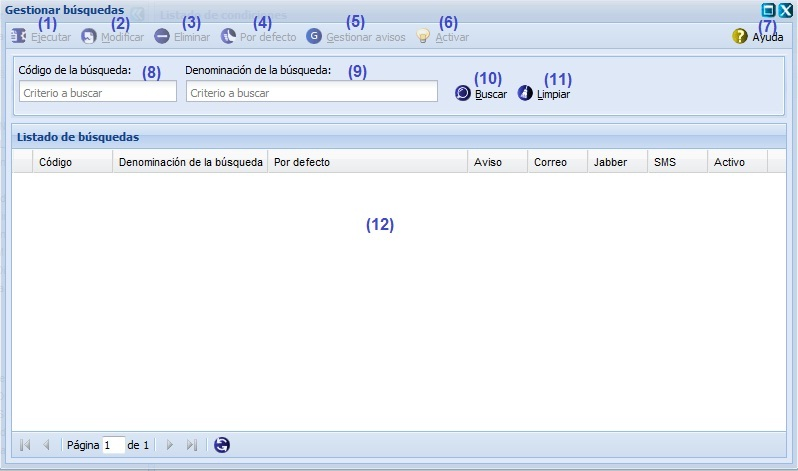
Figura 25. Interfaz Gestionar búsquedas.
Las diferentes opciones que conforman la figura anterior permiten:
- Ejecutar, para efectuar esta acción se debe seleccionar del Listado de búsquedas la búsqueda que se desea ejecutar y selecciona la opción Ejecutar. Se muestra el mensaje de información: “La configuración de la búsqueda ha sido ejecutada satisfactoriamente.", notificando el éxito de la operación realizada, se acepta el mensaje de información. Se puede realizar esta operación seleccionando la combinación de teclas (Alt + J).
Validaciones:
- Cuando se selecciona en el listado de búsquedas, la búsqueda que se desea ejecutar se habilita el botón Ejecutar.
- Modificar, para efectuar esta acción se debe seleccionar del Listado de búsquedas la búsqueda que se desea modificar y selecciona la opción Modificar. Se muestra la interfaz Modificar búsqueda con los datos que se le habían adicionado con anterioridad. Se modifican los datos deseados, se oprime el botón Aceptar. En el caso que desee cancelar las acciones realizadas se oprime el botón Cancelar y se cierra la interfaz Modificar búsqueda. El sistema valida los datos introducidos, se muestra el mensaje de información: “La búsqueda ha sido modificada satisfactoriamente.", se presiona el botón Aceptar, se cierra la interfaz Modificar búsqueda y regresa a la interfaz Gestionar búsqueda, se muestra la actualización de los datos en el listado de búsquedas. Se puede realizar esta operación seleccionando la combinación de teclas (Alt + M).
Validaciones:
- Cuando se selecciona en el listado de búsquedas, la búsqueda que se desea modificar se habilita el botón Modificar.
- No se puede adicionar una búsqueda con una misma denominación, en caso que ya exista la búsqueda que se quiere modificar el sistema le mostrará un mensaje de información.
- Los campos Denominación de la búsqueda y Código de la búsqueda son obligatorios en caso de dejar estos campos vacíos el sistema mostrará un mensaje de alerta de error en el campo y permite corregirlos.
- Si el recuperador complejo tienen una integración con el sistema de Alerta y Avisos, se muestra un mensaje de confirmación: “¿Está seguro que quiere modificar la búsqueda seleccionada? La búsqueda está asociada a un aviso, el cual será modificado con esta acción.”. En caso que acepte el mensaje continúa el flujo normal.
- Eliminar, para efectuar esta acción se debe seleccionar del Listado de búsquedas la búsqueda que se desea eliminar y selecciona la opción Eliminar. Se muestra el mensaje de confirmación: “¿Está seguro que quiere eliminar la búsqueda seleccionada?”. En el caso que desee cancelar la acción realizada se oprime el botón Cancelar, se cierra el mensaje de confirmación y regresa a la interfaz Gestionar búsqueda. Si presiona el botón Aceptar, se muestra el mensaje de información: “La búsqueda ha sido eliminada satisfactoriamente.”, se acepta el mensaje de información y se regresa a la interfaz Gestionar búsqueda, mostrándose actualizado el listado de búsquedas. Se puede realizar esta operación seleccionando la tecla (Del).
Validaciones:
- Cuando se selecciona en el listado de búsquedas, la búsqueda que se desea eliminar se habilita el botón Eliminar.
- Si el recuperador complejo tienen una integración con el sistema de Alerta y Avisos, se muestra un mensaje de confirmación: “¿Está seguro que quiere eliminar la búsqueda seleccionada? La búsqueda está asociada a un aviso, el cual será eliminada con esta acción.”. En caso que acepte el mensaje continúa el flujo normal.
- Por defecto, para efectuar esta acción se debe seleccionar del Listado de búsquedas la búsqueda que se desea establecer por defecto y selecciona la opción Por defecto. Se establece la búsqueda seleccionada por defecto, mostrándose en el Listado de búsquedas, la búsqueda seleccionada marcada por defecto, posibilitándole al usuario cuando ejecute nuevamente la funcionalidad de Recuperaciones complejas, se mostrará en la pestaña Reporte de planes, la búsqueda que se estableció por defecto.
Validaciones:
- Cuando se selecciona en el listado de búsquedas, la búsqueda que se desea establecer por defecto se habilita el botón Por defecto.
- Solo se puede establecer una búsqueda por defecto.
- Si se selecciona la búsqueda que ya ha sido establecida por defecto y se selecciona el botón Por defecto, el sistema quitara la opción por defecto a la búsqueda seleccionada.
- Gestionar avisos. Se puede realizar esta operación seleccionando la combinación de teclas (Ctrl+Alt +G).
- Activar. Se puede realizar esta operación seleccionando la combinación de teclas (Ctrl+Alt +A).
- Mostrar ayuda de la funcionalidad. Se puede realizar esta operación seleccionando la combinación de teclas (Alt + H).
- Código de la búsqueda. Introducir el Código de la búsqueda por el que se va a efectuar una búsqueda.
- Introducir la Denominación de la búsqueda por la que se va a efectuar una búsqueda.
- Buscar a partir de las opciones Código de la búsqueda y Denominación de la búsqueda, introducidas en las opciones (8) y (9) respectivamente. En el caso de que no existan búsquedas que cumplan con los criterios introducidos, el sistema mostrará el mensaje de información: “No existen datos que se correspondan con los criterios de búsqueda especificados.”, notificando que no existen datos que correspondan con los criterios de la búsqueda especificados. Se acepta el mensaje de información. Se puede realizar esta operación seleccionando la combinación de teclas (Alt + B).
Validaciones:
- El criterio de búsqueda denominación solo acepta letras entre 3 y 255 caracteres.
- Limpiar filtro(s). Esta acción limpiará todos los criterios de búsqueda, deshabilitando los filtros realizados. Se puede realizar esta operación seleccionando la combinación de teclas (Alt + L).
- Mostrar el Listado de búsquedas existentes en el sistema.
Guardar búsqueda
Para realizar esta funcionalidad se debe de haber realizado una configuración de la búsqueda con anterioridad. Para ejecutar esta acción se selecciona el botón Guardar búsqueda opción (3) de la figura 24. Se muestra la interfaz Guardar búsqueda, ver figura 26.
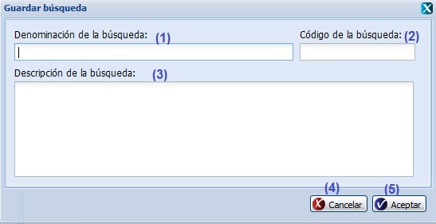
Figura 26. Interfaz Guardar búsqueda.
Las opciones de la figura anterior permiten:
- Insertar la denominación que el usuario desea darle al criterio de búsqueda que se quiere registrar.
- Insertar el código que el usuario desea darle al criterio de búsqueda que se quiere registrar.
- Insertar la descripción que el usuario desea darle al criterio de búsqueda que se quiere registrar.
- Cancelar las acciones y salir de la interfaz sin guardar los datos.
- Guardar el criterio de búsqueda y cerrar la interfaz.
Validación de los campos:
- No se puede adicionar un criterio de búsqueda con una misma denominación, si esto ocurre el sistema le mostrará el mensaje de información: “La búsqueda que quiere adicionar ya existe.”.
- Los campos Denominación de la búsqueda y Código de la búsqueda son obligatorios en caso de dejar estos campos vacíos el sistema mostrará un mensaje de alerta de error en el campo y permite corregirlos.
- Si las condiciones de la búsqueda no están completas, al presionar el botón Guardar búsqueda para guardar la búsqueda configurada, se muestra el mensaje de alerta: “Existen condiciones incompletas.”.
Adicionar una nueva condición
Para ejecutar esta acción se selecciona el botón Adicionar una nueva condición opción (9) de la figura 24. Se muestra la interfaz Adicionar condiciones, ver figura 27. Se muestra un árbol de los campos a mostrar para realizar la configuración de la búsqueda y en la sección derecha permite mostrar las condiciones seleccionadas por el usuario. El usuario selecciona los campos que desea añadir a la lista de condiciones de búsqueda, permitiéndole al usuario adicionar campos a la condición de la configuración de una búsqueda.
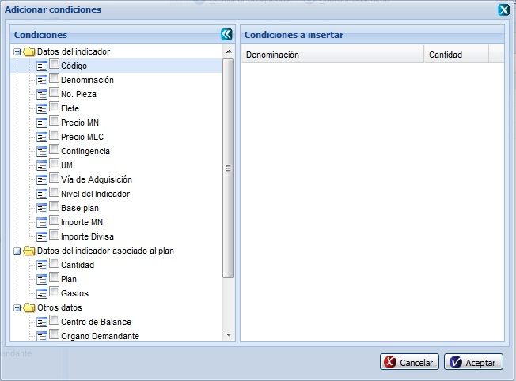
Figura 27. Interfaz Adicionar condiciones.
Al mostrarse los campos seleccionados en el Listado de condiciones, se introducen o seleccionan los datos de la configuración de la búsqueda:
- Condición: criterio que se selecciona para la configuración de la búsqueda.
- Valor: valor que toma la condición seleccionada.
- Lógico: valor lógico que permite realizar combinaciones de condiciones para realizar la búsqueda.
Validación de los campos:
- Los campos Condición y Valor son obligatorios en caso de dejar estos campos vacíos el sistema mostrará un mensaje de alerta de error en el campo y permite corregirlos.
- Si las condiciones de la búsqueda no están completas, al presionar el botón Guardar búsqueda para guardar la búsqueda configurada, se muestra el mensaje de alerta: “Existen condiciones incompletas.”.
- Cuando se selecciona una condición del árbol de condiciones, al mostrarse en el Listado de condiciones a insertar, la cantidad que muestra por defecto es 1.
Ordenar por
Para ejecutar esta acción se selecciona el botón Ordenar por, opción (10) de la figura 24. Se muestra la interfaz Ordenar por, ver figura 28. Esta funcionalidad es para cambiar el orden de los campos para que a la hora de realizar la búsqueda se ordenen de manera ascendente o descendente con el primero que aparece en el listado y luego con el resto.
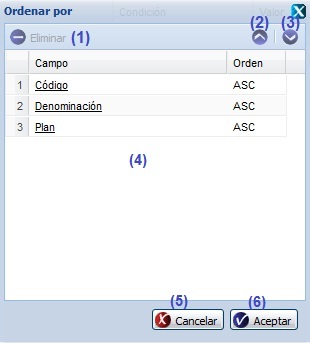
Figura 28. Interfaz Ordenar por.
Las opciones de la figura anterior permiten:
- Eliminar condición, si se desea eliminar un campo para que no se ordene a la hora de realizar la búsqueda se selecciona el campo que desea eliminar, se oprime el botón Eliminar, eliminándose del listado de campos a ordenar. Se puede realizar esta operación seleccionando el campo que desea eliminar y presionando la tecla (Del).
- Subir campo, se cambia el orden de los campos con respecto al anterior y se coloca un lugar por encima.
- Bajar campo, se cambia el orden de los campos con respecto al siguiente y se coloca un lugar por debajo.
- Listado de campos a ordenar.
- Cancelar las acciones y salir de la interfaz sin guardar los datos.
- Guardar el orden de los campos y cerrar la interfaz.
Validación:
- Cuando se selecciona del listado de campos, el campo que desea eliminar, se habilita el botón Eliminar.
- El orden que muestra el sistema los campos de la interfaz es por defecto de manera ascendente.
- Cuando se selecciona del listado de campos, el campo al cual se le desea cambiar el orden y existe más de un campo, se habilitan los botones para Subir el campo y Bajar el campo según corresponda:
- Si el campo seleccionado es el primero del listado solo se habilitará el botón Bajar campo.
- Si el campo seleccionado es el último del listado solo se habilitará el botón Subir campo.
- Si el campo seleccionado no es ni el último, ni el primero del listado, se mantendrán habilitados los botones Subir campo y Bajar campo.